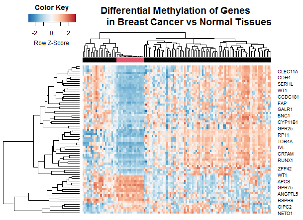
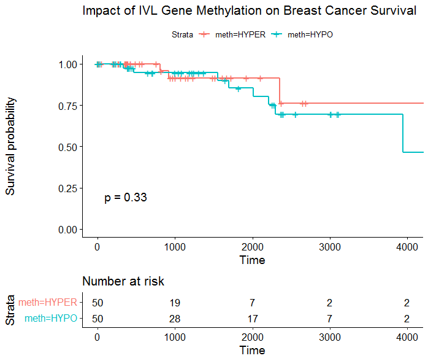

Selected Projects
TCGA Breast Cancer Classification and Survival Analysis


I developed Elastic Net and k-Nearest Neighbor models for classifying TCGA Breast Cancer samples using DNA Methylation Data
I developed Elastic Net and k-Nearest Neighbor models for classifying TCGA Breast Cancer samples using DNA Methylation Data